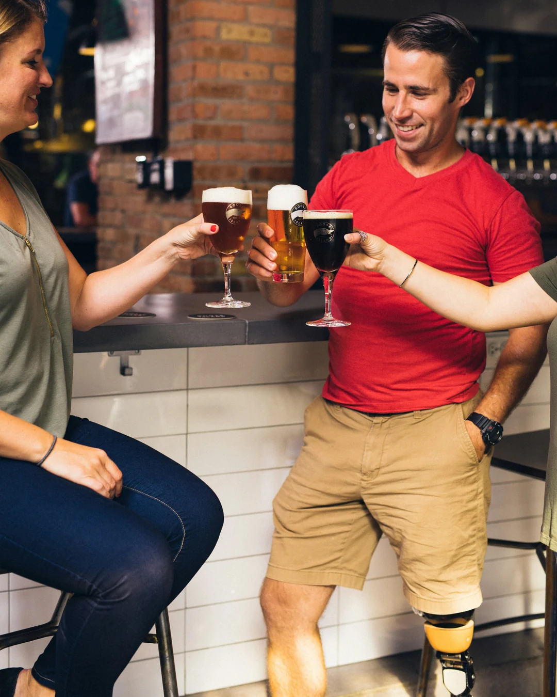
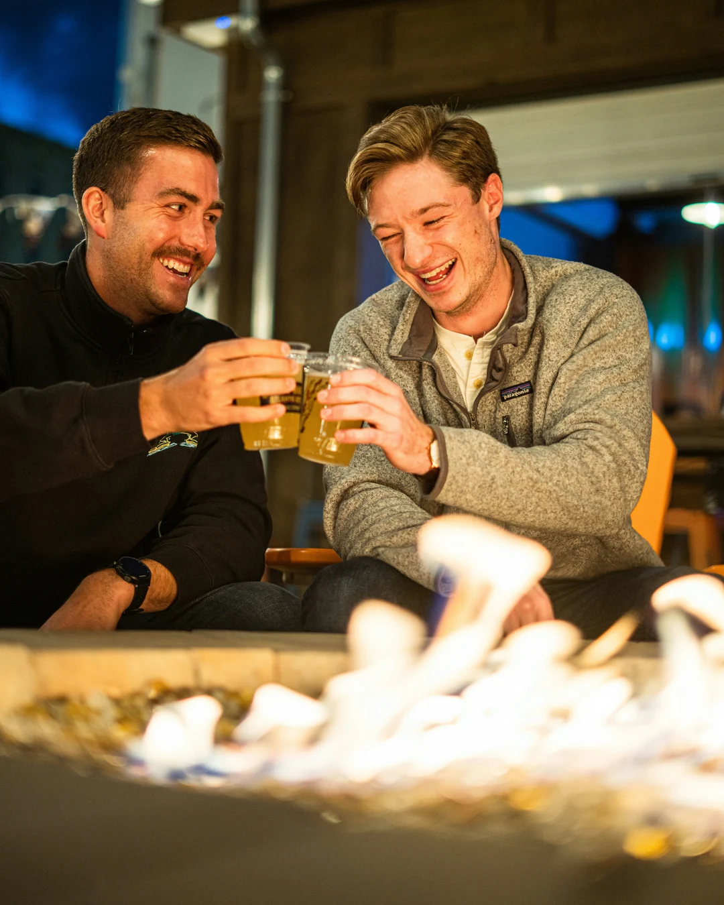
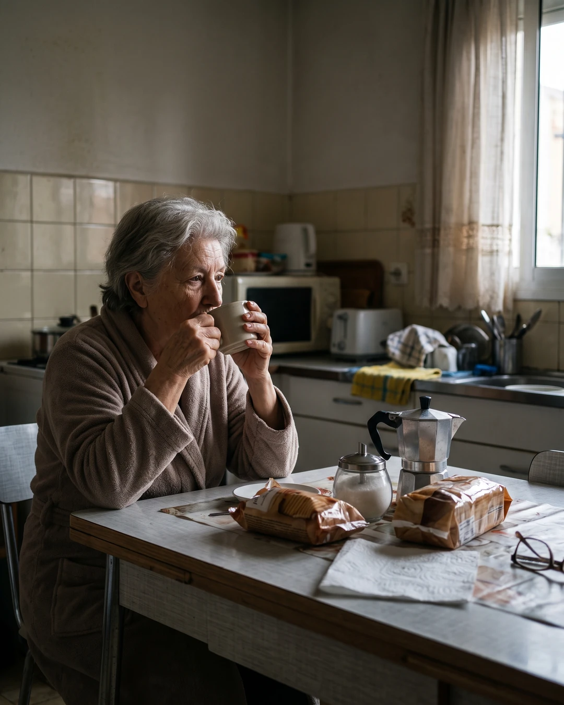

Caso n.º 4 · Gente bebiendo
Imágenes
-
REAL
Fotografía real
-

REAL
Fotografía real
-

REAL
Fotografía real
-

IA
La confesión del sospechoso
Una mujer mayor bebiendo café de una taza en la mesa de su cocina por la mañana, junto a la ventana.
-
REAL
Fotografía real
¿Dato o Bulo?
-
DATO «Los constructores de las pirámides de Egipto cobraban parte de su salario en cerveza.»
La cerveza era un alimento básico en el Antiguo Egipto.
- Se estima que los trabajadores de Guiza recibían unos 4 o 5 litros al día.
- Era una cerveza espesa.
-
DATO «Existen bebidas alcohólicas tradicionales que se fermentan con saliva humana.»
Algunas versiones tradicionales de la chicha andina, el masato amazónico y el kuchikamizake japonés se hacían masticando el ingrediente y escupiéndolo.
- Se hacen con maíz, yuca y arroz, respectivamente.
- Las enzimas de la saliva convierten el almidón en azúcares que luego fermentan.
-
DATO «Alemania tiene más de 1.000 fábricas de cerveza.»
Tiene alrededor de 1.500, muchas de ellas pequeñas y locales.
- Gran parte de su cerveza sigue la Ley de Pureza de 1516.
-
DATO «El té es la bebida más consumida del mundo después del agua.»
Se toma a diario en casi todos los países, desde China e India hasta el Reino Unido.
-
BULO «El vino líquido más antiguo conservado hasta hoy tiene unos 4.000 años.»
Tiene unos 2.000 años: se encontró en una tumba romana de Carmona (Sevilla, España) y se confirmó en 2024.
- Antes lo tenía la botella de vino de Speyer (Alemania), de unos 1.700 años.